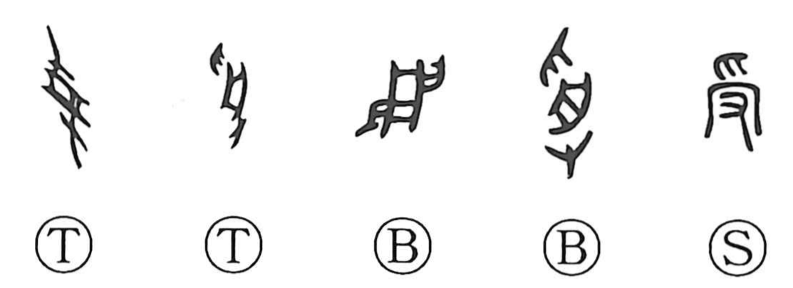

受

Kun: ukeru, ukaru | On: ju
to receive ・ accept ・ undergo
Explanation
受 places 舟, here a tray or basin, between two hands. The upper hand is 爪 and the lower one 又; together they form 𠬪. Something is placed in the vessel and passed from one person to another.
Seen from above, the hand grants or hands it over. Seen from below, the hand receives it. Early use of 受 includes both sides of the exchange, and bronze inscriptions use the graph for giving as well as receiving.
授 was formed later to specify the granting side, leaving 受 chiefly for accepting or taking in. Receiving can also mean inheriting or continuing what has been handed down. The shared vessel keeps the relation between giver and recipient visible.